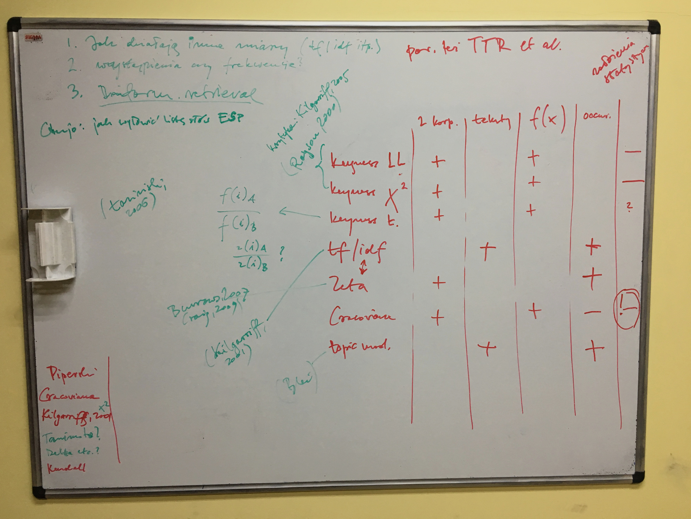
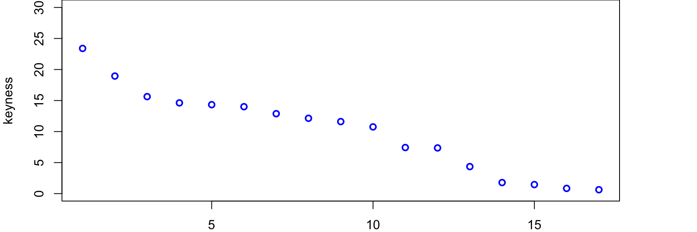
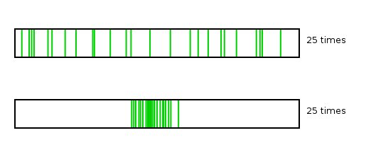
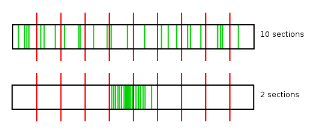
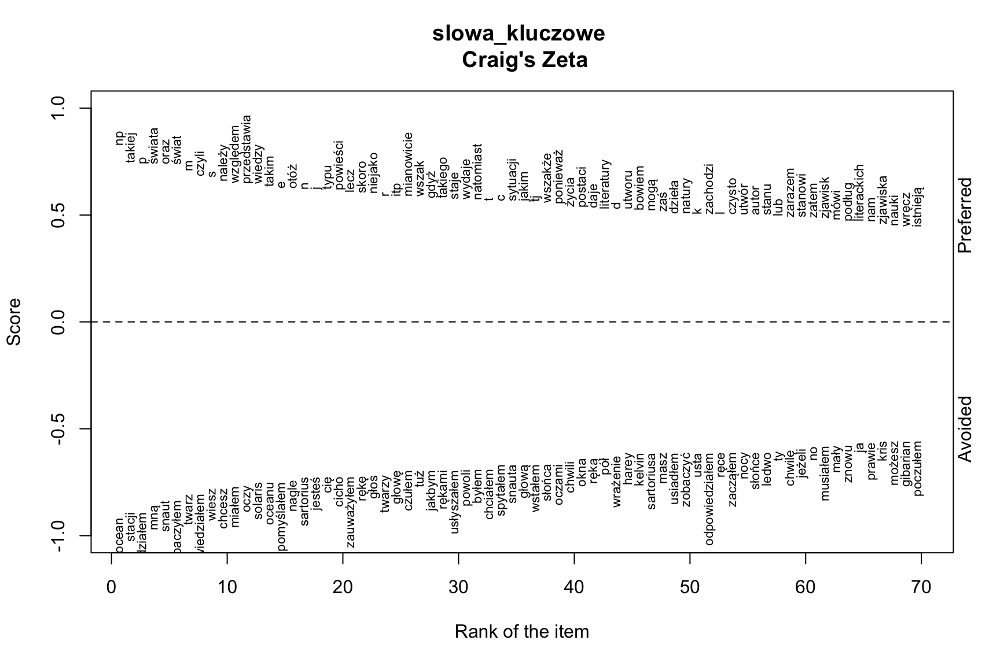

Maciej Eder (Instytut Języka Polskiego PAN)

Nie czytając, poznać treść, czyli o metodach automatycznej identyfikacji słów kluczowych
Maciej Eder
Instytut Języka Polskiego PAN
Wystawę prezentującą dorobek Tadeusza Kantora obejrzą mieszkańcy Sao Paulo (Brazylia). Ekspozycja “Maszyna Kantor. Wystawianie, perforowanie, montowanie, malowanie i inne sposoby produkcji” otwarta zostanie 18 sierpnia. W tym roku przypada 100. rocznica urodzin artysty. Jak poinformował Błażej Filanowski z Muzeum Sztuki w Łodzi - jednego ze współorganizatorów wystawy - ekspozycja będzie “największą, komplementarną prezentacją dorobku tego twórcy poza granicami kraju, jak i jego pierwszą retrospektywą w Ameryce Południowej”. W specjalnie przygotowanej przestrzeni pojawi się ponad 130 obiektów: oryginały i repliki rekwizytów scenicznych, dzieła malarskie, rysunki, asamblaże, a także bardzo bogata dokumentacja fotograficzna i filmowa happeningów, akcji oraz…
kantora, kantor, sztuki, cricot, paulo, sao, teatru, krakowskiej, muzeum, ekspozycja, twórczości, krakowie, happeningów, krzysztofory, kuratorów, …
Rok 1647 był to dziwny rok, w którym rozmaite znaki na niebie i ziemi zwiastowały jakoweś klęski i nadzwyczajne zdarzenia.
rok zwiastowały jakieś zdarzenia nadzwyczajne klęski znaki rozmaite dziwny niebie ziemi którym był i to na w

kantora, kantor, sztuki, cricot, paulo, sao, teatru, krakowskiej, muzeum, ekspozycja, twórczości, krakowie, happeningów, krzysztofory, kuratorów, plastyków, scenografem, wielopole, wystawy, aktorem, malarza, muzeów, reżyserem, …, …, …, …, a, są, jak, jej, również, która, bardzo, tej, do, na, w, się
## [1] "lecz" "ponieważ" "jako" "jest"
## [5] "np" "informacji" "świat" "dzieła"
## [9] "są" "można" "czyli" "fiction"
## [13] "science" "jeśli" "świata" "powieści"
## [17] "bowiem" "właśnie" "teorii" "dla"
## [21] "oraz" "literatury" "należy" "tj"
## [25] "więc" "itp" "by" "podług"
## [29] "utwór" "lub" "postaci" "otóż"
## [33] "takiej" "stanowi" "przedstawia" "teoria"
## [37] "niejako" "względem" "sprzeczności" "takich"
## [41] "wiedzy" "mogą" "takiego" "bohatera"
## [45] "mianowicie" "utworu" "musi" "typu"
## [49] "ani" "autor" "powieść" "wszak"
## [53] "zbioru" "życia" "natomiast" "czytelnika"
## [57] "natury" "dicka" "dostojewskiego" "sf"
## [61] "takim" "sensie" "gdy" "dzieło"
## [65] "kultury" "zjawisk" "takie" "jakim"
## [69] "zachodzi" "czysto" "tedy" "nam"
## [73] "zaś" "gdyż" "literaturze" "literatura"
## [77] "utwory" "zarazem" "zjawiska" "tym"
## [81] "pisarz" "zajść" "sytuacji" "bohater"
## [85] "humbert" "wszakże" "gatunku" "dziś"
## [89] "stanu" "todorov" "utworów" "prostu"
## [93] "daje" "istnieją" "skoro" "aby"
## [97] "efekt" "literackich" "toteż" "czytelnik"

\[\zeta_{(a,b)} = \left(\frac{f_{(a)} - f_{(b)}}{100}\right) +1\]
(Burrows, 2007; Craig, 2009)

## [1] "np" "takiej" "świata" "oraz" "świat"
## [6] "czyli" "należy" "względem" "przedstawia" "wiedzy"
## [11] "takim" "otóż" "typu" "powieści" "lecz"
## [16] "skoro" "niejako" "itp" "mianowicie" "wszak"
## [21] "gdyż" "takiego" "staje" "wydaje" "natomiast"
## [26] "sytuacji" "jakim" "tj" "wszakże" "ponieważ"
## [31] "życia" "postaci" "daje" "literatury" "utworu"
## [36] "bowiem" "mogą" "zaś" "dzieła" "natury"
## [41] "zachodzi" "czysto" "utwór" "autor" "stanu"
## [46] "lub" "zarazem" "stanowi" "zatem" "zjawisk"
## [51] "mówi" "podług" "literackich" "nam" "zjawiska"
## [56] "nauki" "wręcz" "istnieją" "możliwych" "rozmaitych"
## [61] "skądinąd" "science" "czytelnika" "dzieło" "kultury"
## [66] "utwory" "toteż" "autora" "im" "ów"
## [71] "teorii" "kolei" "wartości" "stąd" "teoria"
## [76] "wieku" "informacji" "sądzę" "owej" "tedy"
## [81] "relacji" "fakt" "wyłącznie" "kwestii" "dość"
## [86] "trudno" "literatura" "niestety" "literaturze" "charakter"
## [91] "działań" "filozofii" "pełni" "rzec" "stopniu"
## [96] "jakimi" "ono" "takie" "musi" "niż"
| word | count | word | count |
|---|---|---|---|
| the | 27595 | the | 28662 |
| and | 26735 | and | 14109 |
| I | 22538 | of | 13229 |
| … | … | … | … |
| northerly | 1 | revolvers | 1 |


\[P_{r(x)} = \frac{1}{N}\sum_{i=1}^{r(x)}f(i)\]
co jednocześnie zapewnia, że wartości znajdą się w przedziale {0, 1}.
bardziej elegancka wersja omawianego pomysłu:
\[P_{r(x)} = \left( \frac{1}{N}\sum_{i=1}^{r(x)}f(x_{i}) \right) - f(x)\]
która jest oczywiście jednoznaczna z poniższym wzorem:
\[P_{r(x)} = \frac{1}{N}\sum_{i=1}^{r(x-1)}f(x_{i})\]
Z powyższych wzorów wynika, że pozycja danego słowa \(P_{r(x)}\) jest po prostu sumą skumulowaną frekwencji wszystkich słów poprzedzających.
## [1] "świat" "fiction" "science" "powieści"
## [5] "literatury" "itp" "podług" "utwór"
## [9] "np" "względem" "przedstawia" "tj"
## [13] "sprzeczności" "wiedzy" "bohatera" "mianowicie"
## [17] "utworu" "autor" "powieść" "wszak"
## [21] "zbioru" "czytelnika" "dicka" "dostojewskiego"
## [25] "sf" "dzieło" "kultury" "typu"
## [29] "zajść" "tedy" "utwory" "pisarz"
## [33] "bohater" "humbert" "wszakże" "informacji"
## [37] "stanu" "todorov" "utworów" "efekt"
## [41] "literackich" "toteż" "czytelnik" "oraz"
## [45] "relacji" "znaków" "dostojewski" "mejbaum"
## [49] "przypadku" "ulega" "wellsa" "akcji"
## [53] "autora" "fakt" "itd" "języka"
## [57] "społecznych" "wells" "de" "jednakże"
## [61] "wypowiedzi" "todorova" "zasadniczo" "cywilizacja"
## [65] "fantastyki" "informacja" "kreacji" "krytyk"
## [69] "nowej" "zawiera" "stanów" "uznać"
## [73] "własności" "wyłącznie" "dick" "kwestii"
## [77] "oszusta" "ową" "zadanie" "zasadzie"
## [81] "ewolucji" "teorię" "kraków" "zbiór"
## [85] "okaże" "znaku" "różnica" "społeczeństwa"
## [89] "technologii" "wojna" "zdań" "ad"
## [93] "artystycznego" "będąc" "informację" "krytyka"
## [97] "mackiewicz" "naturalne" "techniki" "tekstów"## [1] "barbara" "bogumił" "waldemar" "stefcia" "kaśka" "andzia"
## [7] "ordynat" "kwiryna" "jej" "elżbieta" "pani" "klicki"
## [13] "mię" "niki" "amelka" "jan" "horski" "agnieszka"
## [19] "krępic" "róża" "andrzej" "ordynata" "stefci" "meir"
## [25] "lucia" "teresa" "justyna" "raczyńska" "andzi" "bronka"
## [31] "wyrzekł" "cechna" "witold" "waldemara" "kościesza"## [1] "wokulski" "ażeby" "madzia" "kiej" "połaniecki"
## [6] "pan" "książę" "który" "że" "zaś"
## [11] "latter" "a" "rzekł" "mu" "wilczek"
## [16] "zagłoba" "począł" "jędrzej" "winicjusz" "dyzma"
## [21] "skarbnik" "madzi" "odpowiedział" "murek" "skrzetuski"
## [26] "bowiem" "ramzes" "solski" "faraon" "ada"
## [31] "flawiusz" "petroniusz" "tym" "wokulskiego" "judym"## [1] "waldemar" "andzia" "kwiryna" "klicki" "niki" "kaśka"
## [7] "amelka" "horski" "krępic" "ordynata" "meir" "bogumił"
## [13] "stefcia" "lucia" "justyna" "raczyńska" "andzi" "cechna"
## [19] "ordynat" "tagiejew" "jéj" "kościesza" "agnisia" "rita"
## [25] "barbara" "witold" "waldemara" "rosomak" "jania" "terenia"
## [31] "trestka" "elżbieta" "lora" "tarłówna" "kaźmiérz"## [1] "połaniecki" "latter" "wokulski" "zagłoba" "dyzma"
## [6] "skarbnik" "skrzetuski" "solski" "winicjusz" "ada"
## [11] "flawiusz" "petroniusz" "judym" "chmielnicki" "wilczek"
## [16] "zawiłowski" "faraon" "gniewosz" "kergolaj" "murek"
## [21] "wokulskiego" "nikodem" "jelsky" "turski" "kunicki"
## [26] "jaże" "bohun" "madzię" "borowiecki" "dębicki"
## [31] "tutmozis" "howard" "täli" "madzi" "rzecki"## [1] "oczami" "znów" "pewno" "pani" "ach"
## [6] "czuła" "usta" "przecież" "swe" "swą"
## [11] "wzrokiem" "wzrok" "dziewczyna" "oczu" "chciała"
## [16] "spojrzała" "panią" "postać" "czyż" "mię"
## [21] "podniosła" "dziecko" "głębi" "stała" "dotąd"
## [26] "matka" "tem" "matki" "sama" "powoli"
## [31] "miała" "myślała" "nagle" "ramionami"## [1] "bowiem" "począł" "odpowiedział" "ażeby" "którzy"
## [6] "przecie" "kazał" "między" "jakoż" "zaś"
## [11] "ledwie" "ponieważ" "tysięcy" "rozdział" "gdyż"
## [16] "czym" "dał" "musiał" "bóg" "całkiem"
## [21] "wraz" "około" "rzekł" "nareszcie" "poszedł"
## [26] "tymczasem" "drugi" "wszystkim" "zrobił" "iż"
## [31] "jako" "jeżeli" "zgoła" "szlachcic"Nie chodzi tutaj — u kaduka! — o herb ani o szeregi przodków podgolonych, z sarmackimi wąsami i przy karabelach — ani wydekoltowane prababki w fiokach. Ojciec i matka — otóż i cały rodowód, jak to jest u nas, w dziejach nowoczesnych ludzi bez wczoraj. Z konieczności wzmianka o jednym dziadku, z musu notka o jednym jedynym pradziadku. Chcemy uszanować nasyconą do pełna duchem i upodobaniem semickim awersję ludzi nowoczesnych do obciążania sobie pamięci wiadomościami, w którym kościele czy na jakim cmentarzu dany dziadek spoczywa. Otóż — ojciec nosił nazwisko Baryka, imię Seweryn, które na rozłogach rosyjskich zbytnio nie raziło. „Siewierian Grigoriewicz Baryka” — uchodziło wtedy, prześlizgiwało się niepostrzeżenie.
nie chodzić tutaj — u kaduk — o herb ani o szereg przodek podgolony, z sarmacki wąs i przy karabela — ani wydekoltowany prababka w fiok. ojciec i matka — otóż i cały rodowód, jak to być u ja, w dzieje nowoczesny człowiek bez wczoraj. z konieczność wzmianka o jeden dziadek, z mus notka o jeden jedyny pradziadek. chcieć uszanować nasycony do pełen duch i upodobanie semicki awersja człowiek nowoczesny do obciążać sobie pamięć wiadomość, w który kościół czy na jaki cmentarz dany dziadek spoczywać. otóż — ojciec nosić nazwisko Baryka, imię Seweryn, który na rozłoga rosyjski zbytnio nie razić. „Siewierian Grigoriewicz Baryka” — uchodzić wtedy, prześlizgiwać się niepostrzeżenie.
## [1] "dłoń" "znów" "ach" "dziewczyna" "pani"
## [6] "suknia" "wzrok" "pewno" "czuły" "quot"
## [11] "ciemny" "ramię" "przecież" "postać" "pochylić"
## [16] "źrenica" "różowy" "głębia" "dziecinny" "podniosły"
## [21] "chłopiec" "czyż" "spojrzenie" "zauważyć" "dotąd"
## [26] "tęsknota" "cisza" "drżeć" "matka" "usta"
## [31] "zobaczyć" "śmiech" "tema" "płynąć"## [1] "bowiem" "począć" "ażeby" "przecie" "zaś"
## [6] "między" "kazać" "przypatrywać" "jakoż" "szlachta"
## [11] "żołnierz" "odpowiedzieć" "gdyż" "ledwie" "szlachcic"
## [16] "ponieważ" "rozdział" "drugi" "czym" "wraz"
## [21] "wojna" "całkiem" "nareszcie" "rozmaity" "obaczyć"
## [26] "około" "jeżeli" "następnie" "stare" "kilkanaście"
## [31] "dosyć" "trzeci" "tymczasem" "ksiądz"